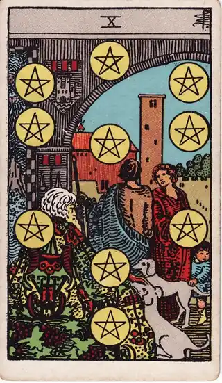
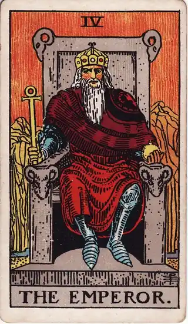

READING
When you're torn over buying a home, so you don't get the way of deciding wrong
· DECIDE. editors

The moment you sat on the sofa in the model room, "yourself, living here" suddenly became concrete. The amount of storage, the closeness to the station, the salesperson's words: "If it's this month, on these terms." But on the way home, the length of 35 years of loan suddenly returned to your head, and your feelings sway greatly. A home is the biggest purchase of your life. It's natural to be torn, and deciding without being torn would be more dangerous.
To say it up front: the goal of this page is not "to see through the right time to buy." The goal is to become able to decide by "whether this home fits my life and my money." Even specialists get price forecasts wrong, but the only one who knows your own conditions is you. A home decided on those conditions won't be swayed later by price movements.
POINT 01 To not get the way of deciding wrong, look at the total and the monthly amount
First, let's put down numbers. If you borrow a property price of ¥40 million with no down payment, a 35-year loan, and an interest rate of 1% a year, the monthly repayment is about ¥113,000. For a condominium, on top of that come management fees and repair reserves of ¥20,000 to ¥30,000 a month, and fixed asset tax of ¥100,000 to ¥150,000 a year. The extra costs at purchase are a guideline of 5 to 8% of the property price, so for ¥40 million, ¥2 million to ¥3.2 million. One guideline is to keep monthly repayments within 25% of your take-home monthly income, but for households with cars or education costs, it's safer to look a little lower.
How you choose the interest rate is also part of how you decide. A variable rate has lighter repayments at first, but in exchange, you keep holding the risk of future rate rises yourself. A fixed rate makes the future total easier to read, but in exchange, repayments at first are heavier. Which is the better deal depends on future interest rates, and nobody knows. What nobody knows can only be chosen by your own condition: "if rates rise, can my household finances withstand it?" Early repayment is the same; there's no need to rush it to the point of thinning the funds you have on hand. The longer you will pay, the more a design with room to spare pays off.
One more thing, about order. Before "whether to buy" comes "owning or renting." There are areas where, for the same monthly amount, you can live more spaciously by renting. If your reason for wanting to buy is only "because rent feels like a waste," stop once. Behind those words, an expectation that it should become an asset, and an impatience of "if not now," tend to mix in.
And you may set aside the discussion of timing — "is now the bottom price?" A home you'll live in for 35 years is something to choose by conditions of living — commute, school, distance from your parents' home — rather than a few years of price movement. Decide not by forecast, but by conditions. That becomes the foundation for not getting the way of deciding wrong.
POINT 02 Seeing it through the cards

Ten of Pentacles, in the figure of a prosperous home where three generations gather, represents "family stability," "a foundation to pass on," and "long-term fruit." The emotional core of buying a home is in this card. The peace of mind of holding the place you return to in your own hands, the real feeling of building the foundation of your family's life. It's a perspective that acknowledges this part, which numbers alone can't measure, as material for judgment. However, it's also a card that assumes you'll live there long-term. If you're assuming you'll let it go in a few years, where you place the weight changes.

The Emperor, in the figure of one seated on a throne, represents "foundation," "responsibility," and "order." It's the resolve to take on the responsibility of continuing to pay a 35-year loan, and the perspective of making order in your household finances yourself. Against the elation in the model room, it reminds you of the posture of sitting back down with conditions and numbers. It's a card for deciding while holding both feeling and responsibility, not for suppressing feeling.

Seven of Pentacles, in the figure of a person gazing at grown crops, is the perspective of "judging" and "letting time pass." Leave the heat of a viewing overnight, and see whether the next day you can still say "on those terms, I want to buy it." Impatience cools, but a real wish does not. For properties you passed on, too, once you can say "why I passed," your eye for the next property grows.
POINT 03 Log the homes you viewed and the reasons you decided
A home decision is a long campaign. It's not rare for it to span months to years. If you leave, for each property you viewed, the good points, the points that caught you, and the reasons you passed, your own standards gradually grow. "I can't give up being within 10 minutes of the station." "If I compromise on sunlight, I'll surely regret it." Once the conditions you can't give up become words, your feelings become harder to sweep away by a salesperson's words or "just for now" terms.
Even after you've bought, there's meaning in leaving how you decided at that time. Because at the time of a judgment about moving or renovating, "what did I put first then, and what did I give up" comes back. If you leave it together with your state when you drew a card, you can look back while distinguishing a day you viewed in impatience from a day your feet were on the ground.
If you're considering it with a partner or family, it's also important to share those conditions. If "what to put first, and what to give up" remains in words, even if opinions clash in the middle of a long consideration, you can return to the foundation of the discussion. The longer house hunting drags on, the more quietly the presence or absence of this foundation pays off. Not making it a decision you carry alone is also part of how you decide. If you want to sort out the axis of owning versus renting itself, see When you're torn between owning and renting, and if you want to deepen the judgment of whether to buy, see the page When you're torn over buying a home.
POINT 04 Questions to ask yourself
Finally, try asking toward the home you're considering. Can you state the monthly total of repayments plus management fees? If a time comes when your income drops by twenty percent, is it designed so you can keep paying? After paying the down payment, will reassuring savings remain? Is your reason for wanting to buy a need of your life, or the impatience of "rent feels like a waste" and "if not now"? Can you concretely picture yourself living in this town for ten years? If your opinion differs from your partner's or family's, can you explain your priorities in words?
A home — both "buying" and "not buying" are big life decisions. The right answer is not in the voice of the market, but in your own conditions. A home you decided on with those conditions, in a way you can accept, becomes a foundation for your life that doesn't rejoice or despair at price news.
Related decision guides
Cards related to this article


More reading
- The types of free tarot readings and how they differ — where the "that feels spot-on" feeling comes from, and how to use them for a decision
- When you're torn over whether to keep going or quit. Standards for letting go of attachment
- Why I, who don't believe in fortune-telling, made tarot into a decision-making tool
- Why the more you ask for advice, the less you can decide, and how to get your own voice back
- When you're torn over whether to keep your current job. How to read a plateau in your career